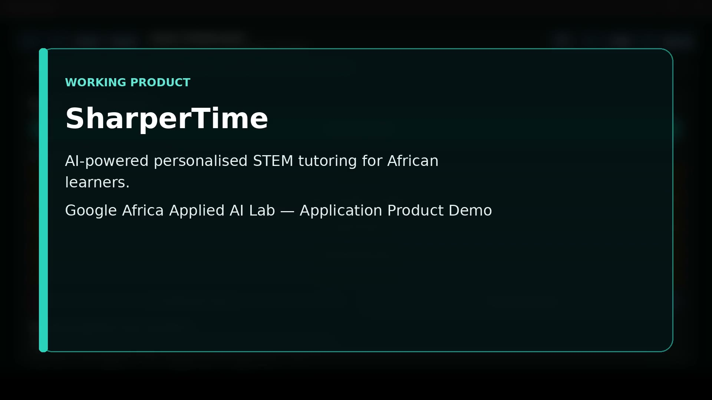
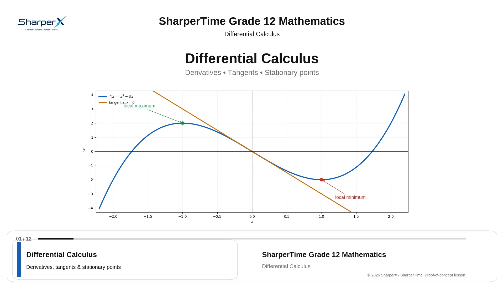

Ask naturally
Start with typed mathematics, a voice question, a textbook photo or a handwritten graph.
Built in South Africa · Designed for African learners
SharperTime is a focused AI learning platform for Grade 12 Mathematics. It helps a learner ask a question, practise at the right difficulty, get a hint, submit their work and understand the correction.
The product
SharperTime is not built to rush to a final answer. It is built to help learners make a better attempt, recognise the gap and try again with useful guidance.
See the real app flowStart with typed mathematics, a voice question, a textbook photo or a handwritten graph.
Select a topic and difficulty, then work through a question instead of consuming a solution.
Submit an attempt and receive correction that explains what went wrong and what to do next.
Use short, worked-example lessons to reinforce a concept and return to practice.
Multimodal by design
Real learners work with pages, symbols, rough working, graphs and spoken questions. SharperTime is being built around those inputs and the feedback they require.
Evidence room
A working product, a real lesson sample and the application deck are available here for review.
01 · Strategy
Product problem, learning workflow, multimodal opportunity, launch model and roadmap in one concise case.
Open deck
▶ 05:0002 · Product
A five-minute walkthrough of topic choice, practice, hints and diagnostic correction.
Watch demo
▶ 05:0003 · Content
A sample worked-example lesson showing the content engine in a calm, classroom-ready format.
Play lessonThe plan
The immediate job is to prove a simple learning loop with Grade 12 Mathematics, measure what helps, and expand from evidence.
Working Windows and Android experience for Grade 12 Mathematics, with guided practice, multimodal input and lesson videos.
Website and Google Play launch, local learner outreach, demos and a focused subscription model.
Add more grades and curriculum coverage, expand device support, then introduce live tutoring and a shared learning canvas.
Why Google Africa Applied AI Lab
Google AI support could help SharperTime improve the quality of mathematics understanding while keeping the learner experience simple and the operating model responsible.
Stronger handling of handwriting, images, diagrams, graphs and richer tutoring interactions.
Lower-cost routing for routine tasks, question classification and feedback workflows.
Faster lesson creation, content iteration, evaluation and a path to broader distribution.
Access and credits
The platform is launching soon. Registration and PayFast checkout will open when Grade 12 Mathematics access is ready for learners and families.
Grade 12 Mathematics tutor access with controlled AI usage for guided practice, hints and feedback.
Access opens at launchAccess to lesson-video streaming, including worked-example content such as the Differential Calculus sample.
Access opens at launchBuilt to be useful